Chapter 11 Plant hydraulics
The supply-loss theory of plant hydraulics, presented by J. S. Sperry, Venturas, et al. (2016) and used in J. S. Sperry, Venturas, et al. (2016), uses the physics of flow through soil and xylem to quantify how steady-state canopy water supply declines with drought and ceases by hydraulic failure. The theory builds on the hydraulic model of Sperry et al. (1998) and can be applied to different segmentations of the soil-plant continuum. In our case we considered a network of \((N \times 2 + S + 1)\) resistance elements, with soil being represented in \(N\) different layers and \(S\) different stem segments. For each soil layer there is a rhizosphere element in series with a root xylem element. The \(N\) soil layers are in parallel up to the root crown. From there there are \(S\) stem xylem segments and a final leaf segment, all in series. Althougth the model implements this network representation of the soil-plant continuum, simpler one-element, two-element and three-element representations will be used in this document to facilitate understanding.
11.1 Vulnerability curves
Each continuum element has a vulnerability curve that starts at maximum hydraulic conductance (\(k_{max}\), flow rate per pressure drop) and monotonically declines as water pressure (\(\Psi\)) becomes more negative. Vulnerability curves form the basis of hydraulic calculations.
11.1.1 Xylem vulnerability curves
Xylem tissues are assigned a two-parameter Weibull function as the vulnerability curve \(k(\Psi)\): \[\begin{equation} k(\Psi) = k_{max}\cdot e^{-((\Psi/d)^c)} \tag{11.1} \end{equation}\] where \(k_{max}\) is the maximum hydraulic conductance (defined as flow per leaf surface unit and per pressure drop), and \(c\) and \(d\) are species-specific and tissue-specific parameters. Note that parameter \(d\) is the water potential (in MPa) at which \(k(\Psi)/k_{max} = e^{-1} = 0.367\). Parameter \(c\) controls the shape of the vulnerability curve (‘exponential’ shape with no threshold has \(c \leq 1\), sigmoidal threshold has \(c > 1\)).
For example, we define the following parameter values for a stem xylem (\(k_{s,max}\) and parameters \(c_s\) and \(d_s\) of the vulnerability curve):
kstemmax = 5.0 # mmol·m-2·s-1·MPa-1
stemc = 3
stemd = -3.0 # MPaFor root xylem (\(k_{r,max}\)), we may assume a higher conductance (i.e. higher efficiency) but also higher vulnerability to cavitation (defined by parameters \(c_r\) and \(d_r\)):
krootmax = 6.6 # mmol·m-2·s-1·MPa-1
rootc = 2
rootd = -2.5 #MPaThe concept of vulnerability curve can be used to specify the relationship between pressure and conductance in any portion of the flow path. Leaf vulnerability curve \(k_l(\Psi)\) can be modelled using the same equation as for xylem: \[\begin{equation} k_l(\Psi) = k_{l,max}\cdot e^{-((\Psi/d_l)^{c_l})} \tag{11.2} \end{equation}\] where \(k_{l,max}\) is the leaf maximum hydraulic conductance. Values defined below specify higher conductance for leaves but also slightly higher vulnerability:
kleafmax = 10
leafc = 2
leafd = -2With these parameter values, the vulnerability curves for root, stem and leaf are (see hydraulics_xylemConductance()):

The dotted line between 0 and \(\Psi_{cav} = -2.5\) MPa indicates the modification of the stem xylem vulnerability curve when cavitation has occurred (i.e., previous embolism limits a the maximum conductance value), as indicated in J. S. Sperry, Venturas, et al. (2016). The corresponding proportion of conductance loss can be found using the stem vulnerability curve: \[\begin{equation} PLC(\Psi_{cav}) = 1.0 - \frac{k_s(\Psi_{cav})}{k_{s,max}} = 1.0 - e^{-((\Psi/{d_s})^{c_s})} \end{equation}\]
1.0 - exp(-(-2.5/stemd)^stemc)## [1] 0.4393754Although root xylem are more vulnerable to the formation of emboli for a given potential, it is generally accepted that the less negative potentials of root xylem compared to the stem lead to cavitation occurring more often in the stem. The constrain created by cavitation has an effect on the calculation of the flow rates and derived quantities (see below).
11.1.2 Rhizosphere vulnerability curve
The rhizosphere conductance function \(k_{rh}(\Psi)\) is modeled as a van Genuchten function (Genuchten 1980):
\[\begin{eqnarray}
k_{rh}(\Psi) &=& k_{rh,max} \cdot v^{(n-1)/(2\cdot n)} \cdot ((1-v)^{(n-1)/n}-1)^2 \\
v &=& [(\alpha \Psi)^{n}+1]^{-1}
\tag{11.3}
\end{eqnarray}\]
where \(k_{rh,max}\) is the maximum rhizosphere conductance, and \(n\) and \(\alpha\) are texture-specific parameters (Leij et al. 1996; Carsel and Parrish 1988). These are automatically set by function soil() when initializing soil objects (see parameters VG_alpha and VG_n in the output of soil()), but we can use function soil_vanGenuchtenParamsCarsel() to derive them from texture types:
textures = c("Sandy loam","Silt loam", "Clay")
#Textural parameters
#Sandy clay loam
p1 = soil_vanGenuchtenParamsCarsel(textures[1])
p1## alpha n theta_res theta_sat
## 764.983 1.890 0.065 0.410alpha1 = p1[1]
n1 = p1[2]
#Silt loam
p2 = soil_vanGenuchtenParamsCarsel(textures[2])
p2## alpha n theta_res theta_sat
## 203.9955 1.4100 0.0670 0.4500alpha2 = p2[1]
n2 = p2[2]
#Silty clay
p3 = soil_vanGenuchtenParamsCarsel(textures[3])
p3## alpha n theta_res theta_sat
## 81.59819 1.09000 0.06800 0.38000alpha3 = p3[1]
n3 = p3[2]We can estimate maximum rhizosphere conductance values assuming that they account for an average percentage of the resistance (e.g. 15%) across the continuum (see functions hydraulics_averageRhizosphereResistancePercent() and hydraulics_findRhizosphereMaximumConductance()):
percentResistance = 15
#Sandy clay loam
krmax1 =hydraulics_findRhizosphereMaximumConductance(percentResistance,
n1,alpha1, krootmax, rootc,rootd, kstemmax, stemc, stemd,
kleafmax, leafc, leafd)
krmax1## [1] 7.375648e+14#Silt loam
krmax2 =hydraulics_findRhizosphereMaximumConductance(percentResistance,
n2,alpha2, krootmax, rootc,rootd, kstemmax, stemc, stemd,
kleafmax, leafc, leafd)
krmax2## [1] 3420747735#Silty clay
krmax3 =hydraulics_findRhizosphereMaximumConductance(percentResistance,
n3,alpha3, krootmax, rootc,rootd, kstemmax, stemc, stemd,
kleafmax, leafc, leafd)
krmax3## [1] 36831905With these parameters, the resulting \(k_{rh}(\Psi)\) functions can be displayed using the function hydraulics_vanGenuchtenConductance():
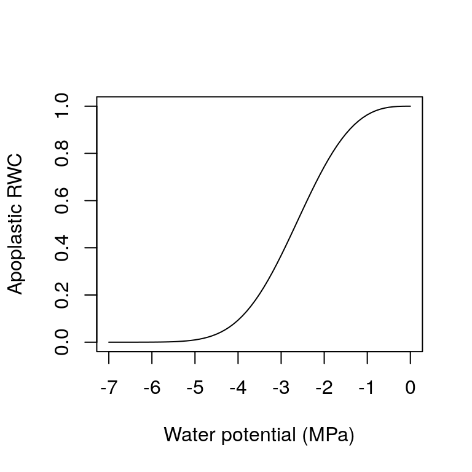
11.2 Water content of plant tissues
In medfate the water content of leaves and stems is tracked explicitly. Following Martin-StPaul, Delzon, and Cochard (2017), we consider two sources of water in plant segments (Tyree and Yang 1990). The first comes from the conduits (tracheids or vessels), which will release water due to cavitation and may be refilled with water from adjacent living tissue. The second source of water is formed by more elastic living cells (i.e. parenchyma) and can potentially be a large source of water during relatively high water potentials. This source can be described using the relative water content of a symplasmic tissue. This storage compartment has its own water potential and exchanges water with the xylem conduits according to the difference in water potential.
11.2.1 Pressure-volume curves
A pressure-volume curve of a tissue relates a water potential against relative water content (\(RWC\); \(kg H_2O \cdot kg^{-1}H_2O\) at saturation) in drying tissues. Pressure-volume theory is usually applied to leaves (Bartlett, Scoffoni, and Sack 2012), but it can also be applied to other tissues such as sapwood or cambium cells.
For living cells, the relationship between \(\Psi\) and \(RWC\) of the symplasmic fraction (\(RWC_{sym}\)) is achieved by separating \(\Psi\) into osmotic (solute) potential (\(\Psi_{S}\)) and the turgor potential (\(\Psi_{P}\)): \[\begin{equation} \Psi = \Psi_{S} + \Psi_{P} \end{equation}\] The relationship for \(\Psi_{P}\) is: \[\begin{equation} \Psi_{P} = -\pi_0 -\epsilon\cdot (1.0 - RWC_{sym}) \end{equation}\] where \(\pi_0\) (MPa) is the osmotic potential at full turgor (i.e. when \(RWC_{sym} = 1\)), and \(\epsilon\) is the modulus of elasticity (i.e. the slope of the relationship). Assuming constant solute content, the relationship for \(\Psi_{S}\) is: \[\begin{equation} \Psi_{S} = \frac{-\pi_0}{RWC_{sym}} \end{equation}\] When \(\Psi \leq \Psi_{tlp}\), the water potential at turgor loss point, then \(\Psi_{P} = 0\) and \(\Psi = \Psi_{S}\). If \(\Psi > \Psi_{tlp}\) then the two components are needed. The water potential at turgor loss point (\(\Psi_{tlp}\)) can be found by (Bartlett, Scoffoni, and Sack 2012): \[\begin{equation} \Psi_{tlp} = \frac{\pi_0 \cdot \epsilon}{\pi_0 + \epsilon} \end{equation}\] As an example, the following figure draws the pressure-volume curve for a tissue with \(\epsilon = 12\) and \(\pi_0 = -3.0\)MPa: 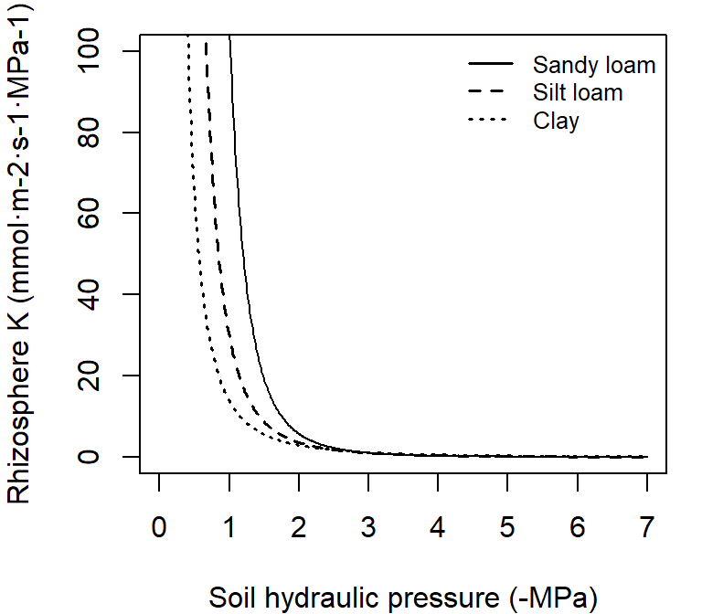
To calculate \(RWC_{sym}\) from the water potential of a tissue, the previous equations need to be combined and, after isolating \(RWC_{sym}\), a quadratic relationship is obtained.
Apoplastic reservoirs (e.g. sapwood) consist of inelastic cells that release their water to the transpiration stream following embolism. As in Hölttä et al. (2009), we equate the relative water content of the apoplastic reservoir of a segment (leaves or stem) to the proportion of maximum conductance in the vulnerability curve: \[\begin{equation} RWC_{apo}(\Psi) = \frac{k(\Psi)}{k_{max}} = e^{-((\Psi/d)^{c})} \end{equation}\]
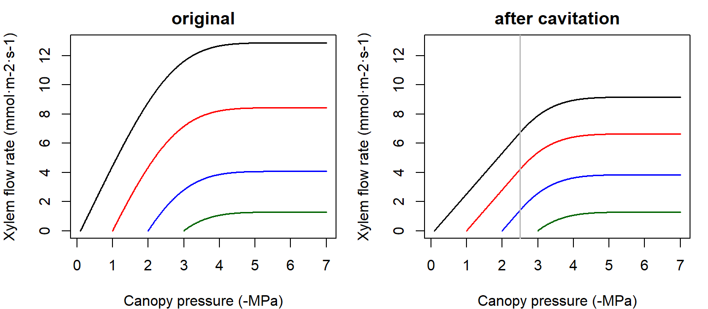
The average relative water content in a given compartment (\(RWC\)) can be obtained from \(\Psi_{sym}\) and \(\Psi_{apo}\) by calculating \(RWC_{sym}(\Psi_{sym})\) and \(RWC_{apo}(\Psi_{apo})\) followed by assuming a constant apoplastic fraction \(f_{apo}\): \[\begin{equation} RWC = RWC_{apo}(\Psi_{apo}) \cdot f_{apo} + RWC_{sym}(\Psi_{sym}) \cdot (1 - f_{apo}) \end{equation}\]
11.2.2 Water content and live fuel moisture content
Pressure-volume curves are useful to determine the moisture content of live fuel elements (leaves and twigs). Given an average relative water content of a water compartment, its live fuel moisture content (\(LFMC\) in \(g H_2O \cdot g^{-1}\) of dry tissue) can be calculated using: \[\begin{equation} LFMC = RWC \cdot \Theta \cdot \frac{\rho_{H_2O}}{\rho} = RWC \cdot LFMC_{max} \end{equation}\] where \(\Theta\) is the tissue porosity (\(cm^3\) of water per \(cm^3\) of tissue), \(\rho\) is the density of the tissue and \(\rho_{H_2O}\) is the density of water.
If we know \(RWC_{apo}(\Psi_{apo})\), the relative water content in conduits, and \(V_{segment}\) (in \(m^3\)), the volume of conducting tissue (sapwood) in the segment, then the mass of water that is stored in conduits is: \[\begin{equation} S_{apo}(\Psi_{apo}) = V_{segment} \cdot f_{apo} \cdot RWC_{apo}(\Psi_{apo}) \cdot \rho_{w} \end{equation}\] where \(\rho_{w}\) is the density of water (\(kgH_2O \cdot m^{-3}\)) and \(f_{apo,s}\) is the volume fraction of apoplastic tissue within sapwood. Similarly, the amount of water stored in the symplastic tissue of the segment at any time is: \[\begin{equation} S_{sym}(\Psi_{sym}) = V_{segment} \cdot (1 - f_{apo}) \cdot RWC_{sym}(\Psi_{sym}) \cdot \rho_{w} \end{equation}\]
Finally, if we consider that both apoplastic and symplastic tissues are at the same water potential, the water content in the segment will be: \[\begin{equation} S(\Psi) = V_{segment} \cdot (f_{apo} \cdot RWC_{apo}(\Psi) + (1 - f_{apo}) \cdot RWC_{sym}(\Psi)) \cdot \rho_{w} \end{equation}\]
11.2.3 Relative water content and cavitation
In medfate we assume that cavitation in stems is non-reversible. Within a given sapwood segment, we further assume that the proportion of conductance loss (\(PLC\)) is related to the relative water content (\(RWC\)) in its conduit vessels (i.e. the water volume in conduit vessels with respect to the maximum water volume): \[\begin{equation} PLC(\Psi_{cav}) = 1 - RWC_{apo}(\Psi_{cav}) \end{equation}\] where \(RWC_{apo,s}\) is the function of relative water content for apoplastic stem tissue. With this assumption one can relate changes in PLC derived from cavitation with decreases in water content in xylem conduits. When \(PLC\) increases the associated change in water content is a source of water can be added to the transpirational stream (Martin-StPaul, Delzon, and Cochard 2017).
11.3 Supply functions
The supply function describes the rate of water supply (i.e. flow) for transpiration (\(E\)) as a function of pressure. The steady-state flow rate \(E_i\) through each \(i\) element of the continuum is related to the flow-induced drop in pressure across that element (\(\Delta \Psi_i\)) by the integral transform of the element’s vulnerability curve \(k_i(\Psi)\) (Sperry and Love 2015): \[\begin{equation} E_i(\Delta \Psi_i) = \int_{\Psi_{up}}^{\Psi_{down}}{k_i(\Psi) d\Psi} \tag{11.4} \end{equation}\] where \(\Psi_{up}\) and \(\Psi_{down}\) are the upstream and downstream water potential values, respectively. The integral transform assumes infinite discretization of the flow path. The supply function can be defined for individual elements of the continuum or for the whole soil-plant continuum using different topologies. In the following subsections we illustrate the supply function for different cases.
11.3.1 Supply function for single elements
In the case of a single stem xylem element the supply function describes the flow rate as a function of canopy pressure (\(\Psi_{canopy}\)). It can be calculated by numerical integration or aproximated using an incomplete gamma function. The shape of the supply function starting at different root crown water potential values (\(\Psi_{rootcrown}\)) is (see function hydraulics_EXylem()):

Right pane shows the supply functions that are obtained in the case of a cavitated xylem (i.e. without refilling), assuming that the minimum water potential experienced so far was -2.5 MPa. Note the linear part of the flow rate between \(\Psi_{soil}\) and this limit.
The supply function of the rhizosphere element relates the flow rate to the pressure inside the roots (\(\Psi_{root}\)). It is calculated by numerical integration of the van Genuchten function (see function hydraulics_EVanGenuchten()), for which we use the analytical approximation of Van Lier, Neto, and Metselaar (2009). Here we draw the supply function for the rhizosphere starting at the four different values of bulk soil pressure (\(\Psi_{soil}\)) and for the same three texture types:

The nearly vertical lines indicate that for many values of \(E_i\) the corresponding drop in water potential through the rhizosphere will be negligible. Only for increasingly negative soil water potential values the decrease in water potential through the rhizosphere becomes relevant. Both in the case of a xylem element or a rhyzosphere element the derivative \(dE_i/d\Psi\) of the supply function is equal to the corresponding vulnerability curve.
11.3.2 Supply function of two elements in series
Let us describe the soil-plant continuum is represented using elements in series (rhizosphere + stem xylem). In this case, the supply function has to be calculated by sequentially using the previous supply functions. The \(E_i\) is identical for each element and equal to the canopy \(E\). Since \(\Psi_{soil}\) is known, one first inverts the supply function of the rhizosphere to find \(\Psi_{root}\) (see function hydraulics_E2psiVanGenuchten()) and then inverts the supply function of the xylem to find \(\Psi_{canopy}\) (see function hydraulics_E2psiXylem()). The two operations can be summarized in a single supply function describing the potential rate of water supply for transpiration (\(E\)) as function of the canopy xylem pressure (\(\Psi_{canopy}\)), starting from different bulk soil (\(\Psi_{soil}\)) values (see function hydraulics\_supplyFunctionTwoElements()):
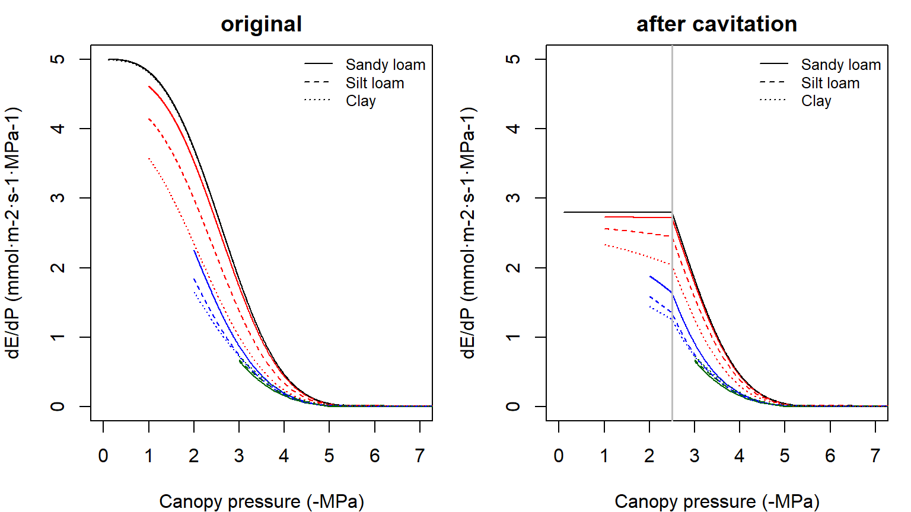
The supply function for the whole continuum contains much information. The \(\Psi\) intercept at \(E=0\) represents the predawn canopy sap pressure which integrates the rooted soil moisture profile. As \(E\) increments from zero, the disproportionately greater drop in \(\Psi_{canopy}\) results from the loss of conductance. As the soil dries the differences in flow due to soil texture become more apparent. The derivative of the whole continuum supply function, \(dE/d\Psi\), is not equal to either of the vulnerability curves and it has to be obtained numerically. The derivative functions corresponding to the supply functions shown in the previous figure are:
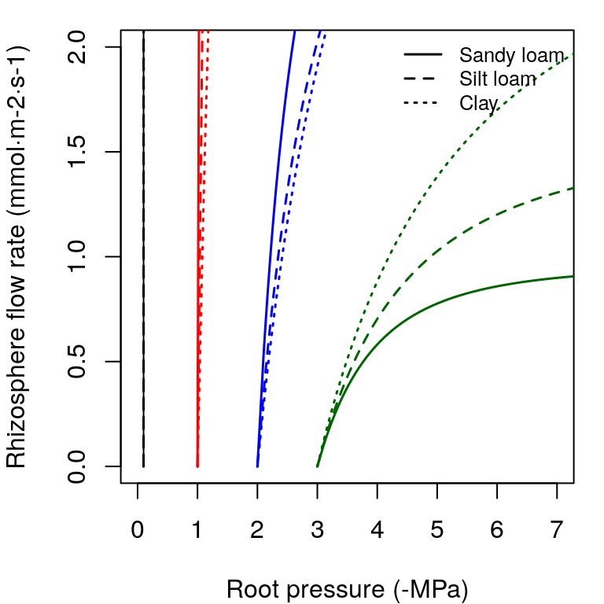
The derivative \(dE/d\Psi_{canopy}\) is the conductance if the entire continuum was exposed to \(\Psi_{canopy}\) (Sperry and Love 2015). It corresponds to the local loss of hydraulic conductance at the downstream end of the flow path. It falls towards zero for asymptotic critical values (\(E_{crit}\)). For a cavitated system \(dE/d\Psi_{canopy}\) can be rather flat, in accordance with the close to linear part of the supply function.
11.3.3 Supply function of three elements in series
If the soil-plant continuum is represented using elements in series (rhizosphere + stem xylem + leaf), the resulting overall conductance and resistance fractions (under wet conditions) are:
rstemmin = 1/kstemmax
rleafmin = 1/kleafmax
#Percentages of minimum resistance
rvec = c(rstemmin,rleafmin)
100*rvec/sum(rvec)## [1] 66.66667 33.33333#Maximum overall conductance
1/sum(rvec)## [1] 3.333333As before, the supply function has to be calculated by sequentially. The \(E_i\) is identical for each element. Since \(\Psi_{soil}\) is known, one first inverts the supply function of the rhizosphere to find \(\Psi_{root}\) and then inverts the supply function of the xylem to find \(\Psi_{stem}\). Finally, one inverts the supply function of the leaf element to find \(\Psi_{leaf}\). As before, the three operations can be summarized in a single supply function describing the potential rate of water supply for transpiration (\(E\)) as function of the leaf pressure (\(\Psi_{leaf}\)), starting from different bulk soil (\(\Psi_{soil}\)) values (see function hydraulics_supplyFunctionThreeElements()):

Note that overall conductance and the maximum flow of the supply function are smaller in this case than in the representation using two elements in series. While the rhizosphere component only adds a significant resistance when the soil dries, considering the leaf segment (or a root xylem segment) increases the overall resistance of the continuum. Higher vulnerability of leaves also makes the curve to saturate for less negative soil water potentials. The derivative functions corresponding to the supply functions shown in the previous figure are (note the highest value being equal to the overall maximum conductance):
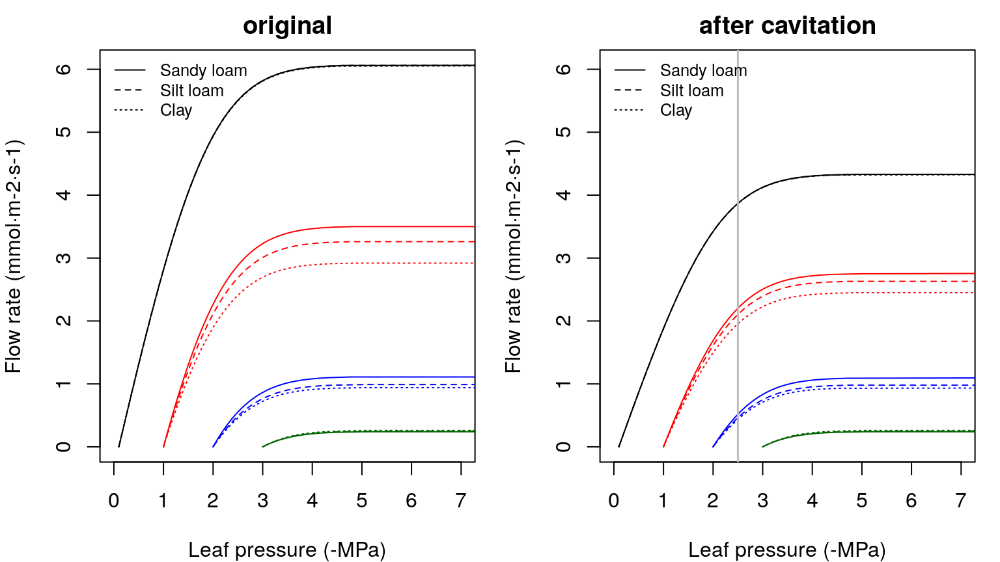
11.3.4 Supply function of a root system
So far we considered supply functions of elements in series, but resistance elements will be in parallel if soil is represented using \(N>1\) different layers. For each soil layer there is a rhizosphere element in series with a root xylem element. The \(N\) soil layers are in parallel up to the root crown.
Network of \(N\) rhizosphere components and root layers in parallel there are \(N+1\) unknown pressures: the \(N\) root surface pressures (\(\Psi_{rootsurf,1},\dots,\Psi_{rootsurf,N}\)) and the root crown pressure at the downstream junction for all root components (\(\Psi_{rootcrown}\)). The \(N+1\) unknown pressures are solved, for each specified total flow value \(E\), using multidimensional Newton-Raphson on a set of equations for steady-state flow (J. S. Sperry, Wang, et al. 2016): \[\begin{eqnarray} E_{k, rhizosphere}-E_{k,root} &=& 0 \\ \sum_{k}^{n}{E_{k,root}}-E &=& 0 \end{eqnarray}\] where \(E_{k, rhizosphere}\) and \(E_{k, root}\) are supply flows calculated using the integrals of either van Genuchten or Weibull function as vulnerability curves, respectively. In the case of rhizosphere elements, \(\Psi_{up,k}=\Psi_{soil,k}\) and in the case of root elements \(\Psi_{up,k}=\Psi_{rootsurf,k}\). Solving the steady-state equations also provides values for flow across each of the parallel paths \(E_{k, rhizosphere} = E_{k, root}\), which are useful to conduct water balance operations on each layer.

Figure 11.1: Schematic representation of hydraulics in a root network
As an example, we start by defining the water potential of three soil layers corresponding to four situations (analogously with the soil water potentials defined above):
psiSoilLayers1 = c(-0.3,-0.2,-0.1)
psiSoilLayers2 = c(-1.3,-1.2,-1.1)
psiSoilLayers3 = c(-2.3,-2.2,-2.1)
psiSoilLayers4 = c(-3.3,-3.2,-3.1)In a network of several soil layers, one has to divide the total rhizosphere and root xylem conductances among layers. Let layer depths be:
d = c(300,700,3000) #Soil layer widths in mmNow let \(v_1\), \(v_2\) and \(v_3\) be the proportion of fine root biomass in each soil layer.
Z50 = 200 #Parameter of LDR root distribution
Z95 = 1200 #Parameter of LDR root distribution
v = root_ldrDistribution(Z50, Z95, d)
v## [,1] [,2] [,3]
## [1,] 0.6652935 0.2749944 0.05971209In the case of the rhizosphere conductances, we can simply define them (for each soil texture type) as:
krhizomaxvec1 = krmax1*v
krhizomaxvec2 = krmax2*v
krhizomaxvec3 = krmax3*vTo divide maximum root xylem conductance among soil layers we need weights inversely proportional to the length of transport distances (J. S. Sperry, Wang, et al. 2016). Vertical transport lengths can be calculated from soil depths and radial spread can be calculated assuming cylinders with volume proportional to the proportions of fine root biomass. The whole process can be done using function root_rootXylemConductanceProportions():
weights = root_xylemConductanceProportions(v, d)
weights## [1] 0.2369724 0.4214326 0.3415950Transport weights are quite different than the fine root biomass proportions. This is because radial lengths are largest for the first (top) layer and vertical lengths are largest for the third (bottom) layer. The root xylem conductances are (in this case they do not depend on soil texture):
krootmaxvec = krootmax*weights
krootmaxvec## [1] 1.564018 2.781455 2.254527Having all these maximum conductances, we can now build the supply functions for each soil texture and starting from the different soil water potential configurations (see function hydraulics_supplyFunctionBelowground()):
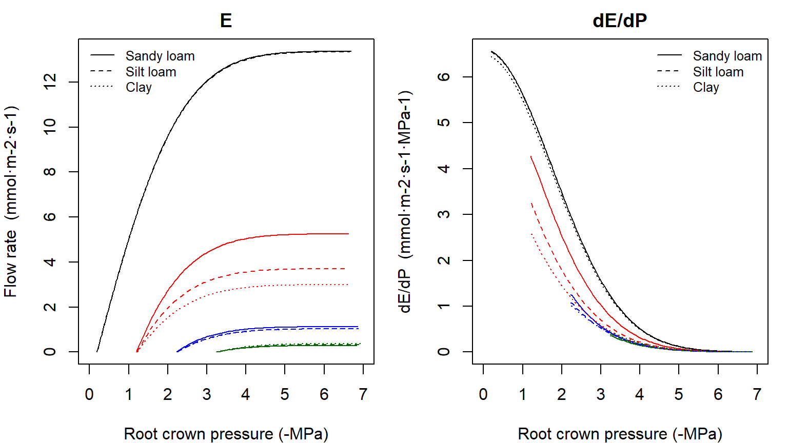
The derivative of \(dE/d\Psi_{rootcrown}\) for the supply function of the root system is again obtained numerically. Solving the previous system of equations provides the water potentials in different points of the root system. Here we plot them for the results of silt loam texture and the first and last soil potential vectors defined above:

Note that when soil is not dry (first situation) pressure drop in the rhizosphere is negligible, but not the pressure drop in the root xylem. For drier soils rhizosphere becomes more relevant. We can also plot the flow rates across each of the parallel paths (again corresponding to the results of silt loam texture and for the four soil potential vectors):
 Note that the contribution of each soil layer depends on the soil conditions and the total amount of flow. For a low total flow rate some layers may have negative flows if their potential is lower than others, which in a dynamic context will cause hydraulic redistribution of water among soil layers.
Note that the contribution of each soil layer depends on the soil conditions and the total amount of flow. For a low total flow rate some layers may have negative flows if their potential is lower than others, which in a dynamic context will cause hydraulic redistribution of water among soil layers.
11.3.5 Supply function of the soil-plant continuum
We can use a network of \((N \times 2 + S + 1)\) resistance elements to represent the soil-plant continuum, with soil being represented in \(N\) different layers. As before, the \(N\) soil layers are in parallel up to the root crown and each soil layer requires at least a rhizosphere and a root segment. From the root crown there are \(S\) stem xylem elements (normally \(S = 1\)) in series and a final leaf element. The whole hydraulic network is illustrated in the figure below.
To build the supply function for the network, we proceed by calculating water potentials in the network for each value of flow. For any given \(E\) value we start by calculating flows and potentials within the root system. After that, and assuming \(S = 1\), the water potential at the upper end of the stem (\(\Psi_{stem}\)) is obtained using the inverse of the stem supply function and setting \(\Psi_{up,k}=\Psi_{rootcrown}\). If \(S > 1\), this is done for each of the stem segments (thus obtaining \(\Psi_{stem, 1}\), \(\Psi_{stem, 2}\), … \(\Psi_{stem, S}\)), while using a maximum conductance for segments equal to \(k_{max,s}\) times \(S\). Leaf water potential (\(\Psi_{leaf}\)) is finaly obtained using the inverse of the leaf supply function and setting \(\Psi_{up,k}=\Psi_{stem, S}\) and assuming a steady-state flow \(E\). The whole supply function \(E(\Psi_{leaf}\)) is obtained repeating these operations from \(E=0\) to a critical value \(E_{crit}\).Figure 11.2: Schematic representation of hydraulics in a whole-plant network
The following figure shows network supply functions (with \(S = 1\)) for each soil texture and starting from the different soil water potential configurations (see function hydraulics_supplyFunctionNetwork()):
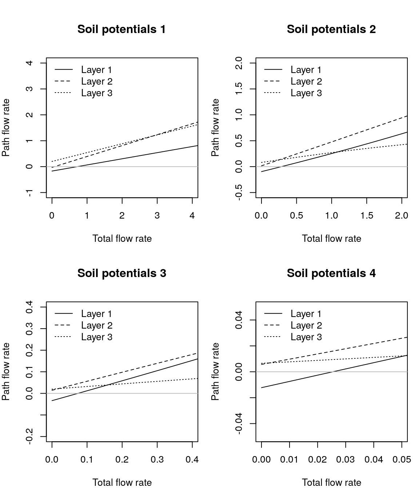
As with previous representations of the soil-plant continuum, the derivative of \(dE/d\Psi_{leaf}\) for the network topology is obtained numerically:
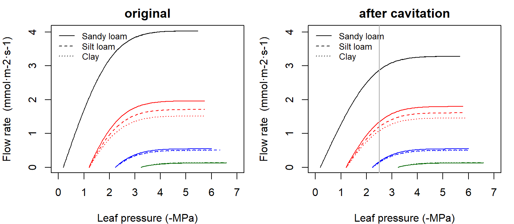
As with the root system, we can know the water potentials in different points of the continuum. Here we plot them for the results of silt loam texture and the first and last soil potential vectors defined above:
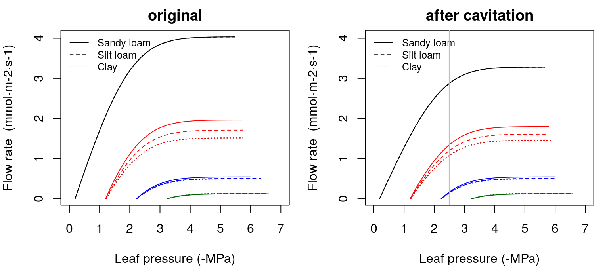
11.3.6 Supply function with water compartments
So far we assumed there are no other sources of water than the soil. In this section we consider the effect of additional water from leaf and stem tissues on the supply function. The supply function of a network representing the continuum is build for a given state of soil water potentials. This approach allows determining flows and water potential for conditions. In a dynamic context one has to calculate the supply function for all values of \(E\), then to determine stomatal conductance (see sections devoted to photosynthesis and stomatal regulation) and finally to decide on a specific value of \(E\) and the corresponding steady-state configuration. Because light and temperature conditions change along the day, steady-state stomatal conductance and instantaneous \(E\) values have to be determined for subdaily steps (e.g. 1-hour steps) and then flows need to be scaled and aggregated. At the end of the day, one may substract water from soil layers and recalculate the supply function for the next day.
When considering water compartments, plant transpiration can be larger or smaller than the water extracted from the soil. Moreover, the supply function of a given time step will be dependent on the status of storage comparments in the previous time step, because this determines how much water is added or removed to the stemflow due to the effect of water compartments. For any segment (either a stem segment or the leaf segment) the flow out of it, \(E_{i,out}\), is not necessarily equal to the flow entering the segment, \(E_{i, in}\). Thus, instead of eq. , the equation governing the flow is (Sperry et al. 1998; Steppe et al. 2005): \[\begin{equation} E_{i,out} = E_{i, in} - \frac{\Delta S_{i}}{\Delta t} = \int_{\Psi_{up}}^{\Psi_{down}}{k_i(\Psi) d\Psi} - \frac{\Delta S_{i}}{\Delta t} \end{equation}\]

Figure 11.3: Schematic representation of hydraulics in a whole-plant network with water compartments
When building the supply function from the root crown to the leaf, one has to consider changes in storage water of the current segment before processing the next segment. Specifically, for every segment \(i\) we take the current downstream water potential of the previous segment as upstream water potential (i.e. \(\Psi_{up} = \Psi_{rootcrown, t}\) when processing the first stem segment, \(\Psi_{up} = \Psi_{i-1, t}\) when processing intermediate stem segments or \(\Psi_{up} = \Psi_{S, t}\) when processing the leaf segment). Then we calculate the steady-state drop in water potential (i.e., determine \(\Psi_{down} = \Psi_{i, t}\)) corresponding to the input flow (\(E_{i,in}\)) using the inverse of the integral transform. If stem cavitation has occurred previously then \(\Psi_{cav,i}\) will limit the maximum conductance. To determine \(E_{i,out}\) we calculate the additional instantaneous flow due to changes in storage water volume (\(\Delta S_{i}/\Delta t\)) using: \[\begin{equation} \Delta S_{i} = S_i(\Psi_{i, t}) - S_i(\Psi_{i, t-1}) \end{equation}\]
As mentioned when describing water content functions, we consider two sources of water in plant segments (Tyree and Yang 1990). The amount of water absorbed by or released from the storage compartment will depend on the properties of the apoplastic and symplastic tissues and the fraction of the segment that corresponds to each kind of tissue. For example, let us take the following storage capacities, fractions of apoplastic tissue and parameters of the pressure-volume curves for symplastic tissue.
Vmaxstem = 0.001005046
Vmaxleaf = 0.0001327463
stemfapo = 0.8
leaffapo = 0.15
stempi0 = -2
stemeps = 16
leafpi0 = -1.5
leafeps = 8The following figures show the change in supply function caused by stem and leaf water compartments, assuming a 1-hr time step and either 0 MPa or -1.5 MPa as previous water potential for all segments (see function hydraulics_supplyFunctionNetworkCapacitance()):
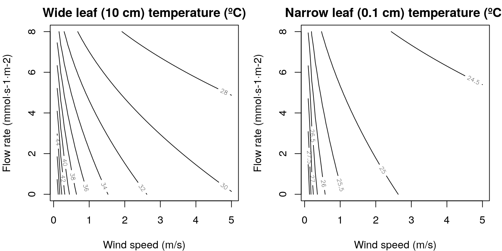
For the same water potential drop, the effect of the water compartment results in a larger transpiration flow. If the previous water potential is more negative than the root crown, negative flows may occur, because of the need to replenish the water compartment. Note, in addition, that \(dE/d\Psi\) is no longer a non-increasing function of \(\Psi\). This has important consequences for the definition of the cost function (see subsection ‘Stomatal regulation’). In our opinion, the effect of water compartments on the transpiration flow are important for subdaily variations in transpiration but are less necessary for seasonal to multi-year simulations. However, we will come back to the importance of compartments for plants being disconnected from the soil.
Bibliography
Bartlett, Megan K, Christine Scoffoni, and Lawren Sack. 2012. “The determinants of leaf turgor loss point and prediction of drought tolerance of species and biomes: a global meta-analysis.” Ecology Letters 15 (5):393–405. https://doi.org/10.1111/j.1461-0248.2012.01751.x.
Carsel, Robert F., and Rudolph S Parrish. 1988. “Developing joint probability distributions of soil water retention characteristics.” Water Resources Research 24 (5):755–69.
Genuchten, MT Van. 1980. “A closed-form equation for predicting the hydraulic conductivity of unsaturated soils.” Soil Science Society of America Journal 44:892–98. https://dl.sciencesocieties.org/publications/sssaj/abstracts/44/5/SS0440050892.
Hölttä, Teemu, Herve Cochard, Eero Nikinmaa, and Maurizio Mencuccini. 2009. “Capacitive effect of cavitation in xylem conduits: Results from a dynamic model.” Plant, Cell and Environment 32 (1):10–21. https://doi.org/10.1111/j.1365-3040.2008.01894.x.
Leij, Fike J., William J. Alves, M.Th. Van Genuchten, and Joseph R. Williams. 1996. The UNSODA Unsaturated Soil Hydraulic Database User’s Manual Version 1.0. August.
Martin-StPaul, Nicolas, Sylvain Delzon, and Hervé Cochard. 2017. “Plant resistance to drought depends on timely stomatal closure.” Ecology Letters 20 (11):1437–47. https://doi.org/10.1111/ele.12851.
Sperry, John S., F R Adler, G S Campbell, and J P Comstock. 1998. “Limitation of plant water use by rhizosphere and xylem conductance: results from a model.” Plant, Cell & Environment 21:347–59. http://onlinelibrary.wiley.com/doi/10.1046/j.1365-3040.1998.00287.x/full.
Sperry, John S., and David M. Love. 2015. “What plant hydraulics can tell us about responses to climate-change droughts.” New Phytologist 207 (1):14–27. https://doi.org/10.1111/nph.13354.
Sperry, John S., Martin D. Venturas, William R. L. Anderegg, Maurizio Mencuccini, D. S. Mackay, YuJie Wang, and David M Love. 2016. “Predicting stomatal responses to the environment from the optimization of photosynthetic gain and hydraulic cost.” Plant Cell and Environment 40 (6):816–30. https://doi.org/10.1111/pce.12852.
Sperry, John S., Yujie Wang, Brett T. Wolfe, D. Scott Mackay, William R L Anderegg, Nate G. Mcdowell, and William T. Pockman. 2016. “Pragmatic hydraulic theory predicts stomatal responses to climatic water deficits.” New Phytologist 212:577–89. https://doi.org/10.1111/nph.14059.
Tyree, Melvin T., and Shudong Yang. 1990. “Water-storage capacity of Thuja, Tsuga and Acer stems measured by dehydration isotherms - The contribution of capillary water and cavitation.” Planta 182 (3):420–26. https://doi.org/10.1007/BF02411394.
Van Lier, Quirijn De Jong, D. Dourado Neto, and Klaas Metselaar. 2009. “Modeling of transpiration reduction in van genuchten-mualem type soils.” Water Resources Research 45 (2):1–9. https://doi.org/10.1029/2008WR006938.